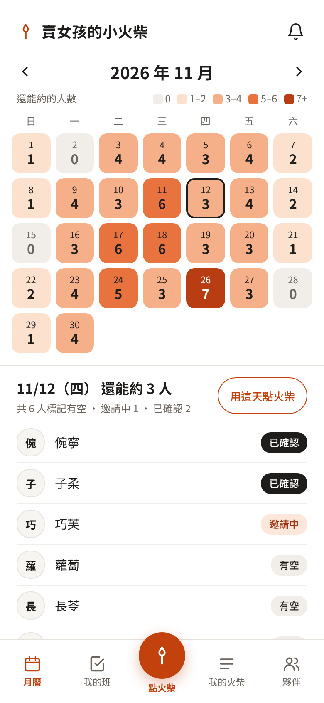
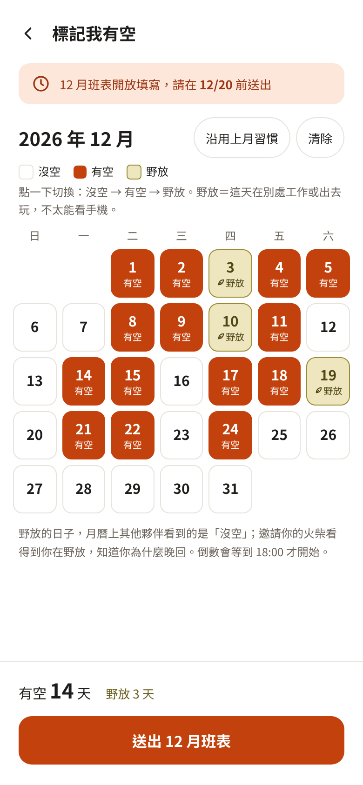
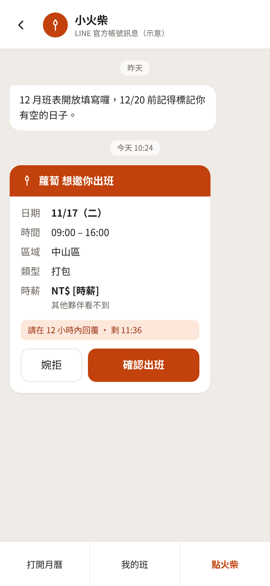
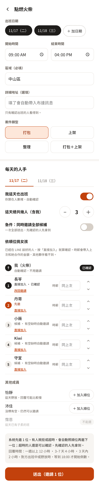
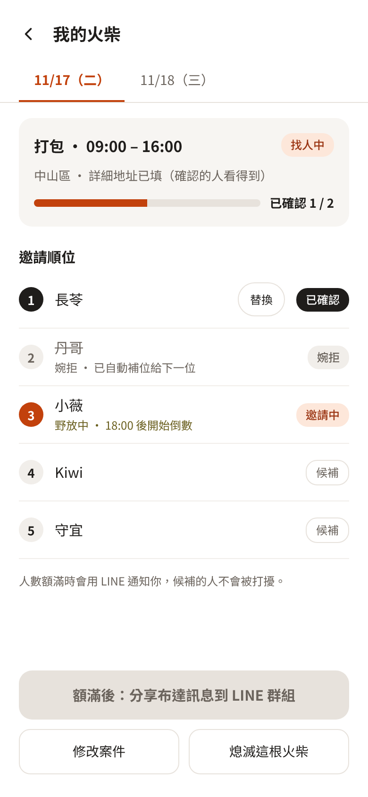

整理師夥伴的排班與找人 App ・ 說明書
版本 0.5（概念版）・ 2026 年 10 月
內容會隨大家的回饋持續更新。
我們是一群大約 20 位的整理師。整理工作通常要兩人以上才能出班，不管誰接到案子，都是在這群彼此信任的夥伴裡互相找人。
以前找人要一個一個開 LINE 對話框問、等回覆、再跟客戶來回對時間。小火柴把這件事變成：
小火柴是減少彼此動作數的工具，不是規則。它不決定任何事，只負責把大家決定好的事記下來、通知到。
| 名詞 | 意思 |
|---|---|
| 女孩 | 當天可以出班的人。 |
| 火柴 | 案件的主要負責人（主整）。每個人都可以是女孩，也可以是火柴。 |
| 點燃火柴 | 火柴在 App 裡建立案件、開始約人。 |
| 熄滅火柴 | 案子取消，所有邀請撤回、已確認的人全部釋出。 |
| 野放 | 這天在別處工作或出去玩，不太能看手機。 |
| 先邀／候補 | 順位在需要人數以內的人先收到邀請，後面的人是候補。 |
| 直接加入 | 已經在 LINE 談好的人，火柴直接加成已確認，不用再發邀請。 |
| 鄰家女孩 | 火柴自己找來、團隊以外的人。直接算進人數，不需要帳號。 |
| 自動補位 | 有人婉拒、超時或取消時，系統照順位邀請下一位候補。 |
| 還能約 | 某天標了有空、而且還沒被確認的人數。月曆上每格的數字就是它。 |
每月 20 號前填好下個月。每一天點一下就切換：
| 狀態 | 意思 | 影響 |
|---|---|---|
| 沒空 | 沒點的日子，就是沒空 | 不會出現在「有空」名單，但火柴仍然可以邀你 |
| 有空 | 可以出班 | 算進月曆的「還能約」 |
| 野放 | 在別處工作、出去玩，不太能看手機 | 這天收到邀請，倒數等到 18:00 才開始。邀請你的火柴看得到你在野放；月曆上其他夥伴看到的是「沒空」 |
火柴修改案件時，你會收到 LINE 通知。需要你回應的情況請見第 4 章。
接到案子就可以點燃，不一定要等客戶付款。先把女孩約好，跟客戶談的時候更有底氣；案子沒成就熄滅，或減少人數。
點燃很自由，但請記得：每一次熄滅，都代表有人替你空出了一天。
| 欄位 | 說明 |
|---|---|
| 出班日期 | 可以選多天 |
| 開始、結束時間 | 預設 09:00–16:00 |
| 區域（必填） | 例如「中山區」。邀請卡和月曆上顯示這一格。 |
| 詳細地址（選填） | 只有確認出班的人看得到。填了，布達訊息會自動帶入；不填，就在群組裡講。 |
| 案件類型 | 打包、上架、整理、打包＋上架 |
| 每天的人手 | 每一天分開設定：我也出班、總人數、急件、順位 |
| 打開（預設）：火柴也是女孩之一 | 關掉：火柴只負責接洽 | |
|---|---|---|
| 人數 | 填「總共幾人（含我）」。填 3，系統只邀 2 位。 | 火柴不算在內，填 3 就邀 3 位。 |
| 火柴自己 | 自動算已確認，不用邀請自己。 | 那天的有空不受影響，還能去當別根火柴的女孩。 |
團隊裡找不到人時，火柴可以自己找外面的人來幫忙。在順位下方輸入名字，按「＋ 鄰家女孩」：
打開「急件：同時邀請全部候補」，就會一次邀請名單上所有人，先確認的人先拿到，額滿後其他人收到「已額滿」。適合明天就要人的情況。
| 距離出班日 | 倒數多久後，也開始邀下一位 |
|---|---|
| 超過一週 | 12 小時 |
| 3–7 天 | 4 小時 |
| 3 天內 | 2 小時 |
對方當天出班中或野放，倒數等到 18:00 才開始；22:00 到隔天 08:00 也不倒數。等不及就用急件。
所有變動都在「我的火柴」→ 選案件 →「修改案件」。改完按儲存，App 會自動通知受影響的人。
| 情況 | 火柴怎麼操作 | App 自動做什麼 |
|---|---|---|
| 改時間 同一天，提早、延後或加長 | 改開始／結束時間 | 已確認的女孩收到「時間變更」通知，有「沒問題」和「沒辦法」兩個按鈕。按沒辦法就釋出並自動補位；不回覆就維持原班。 |
| 改日期 | 選要搬的那一天，改成新日期 | 原本確認的女孩依原順位，優先收到新日期的邀請（新的一天要重新確認）。新日期已有別人班的人自動跳過，空缺照候補補上。舊日期自動釋出。 |
| 加人 | 把那天人數 ＋1 | 邀請下一位候補。候補用完會通知你加人。 |
| 減人 | 把那天人數 －1 | 先撤回還在「邀請中」的邀請。如果都已確認，預設釋出順位最後的人，你也可以改選；被釋出的人收到通知。 |
| 加一天 | 按「＋ 加日期」 | 和點燃時一樣，設定那天的人手和順位後送出。 |
| 少一天 | 刪掉那個日期 | 那天所有邀請撤回、已確認的人釋出，並通知她們。 |
| 找了團隊以外的人 | 按「＋ 鄰家女孩」，填名字 | 直接算已確認；多出來的邀請自動撤回。移除時照順位補位。 |
| 代班 已確認的人找到人代替 | 在她的名字旁按「替換」，選代班的人 | 位子直接交接，兩人都收到通知。不會觸發補位，原本的人也不會留下取消紀錄。 |
| 案子不做了 | 按「熄滅這根火柴」 | 所有邀請撤回、已確認的人全部釋出，統一通知「案子取消」。 |
每次修改都會留下紀錄（誰、什麼時候、改了什麼）。
| 情況 | App 怎麼做 |
|---|---|
| 有人婉拒或取消 | 照火柴排的順位，自動邀請下一位候補。 |
| 倒數結束還沒回覆 | 也開始邀請下一位。原本的人還是可以確認，先確認的人先拿到。 |
| 人數額滿 | 還沒回覆的邀請改成「已額滿」，並用 LINE 通知火柴。 |
| 女孩同一天收到多張邀請 | 她確認其中一張後，其他邀請自動關閉，那些火柴的案子立刻自動補位。 |
| 女孩當天出班中或野放 | 倒數延到 18:00 才開始。 |
| 半夜收到邀請 | 22:00 到隔天 08:00 不倒數。 |
| 收到邀請後，女孩把那天改成沒空或野放 | 不影響邀請，她仍然可以確認或婉拒。 |
| 候補全部用完還沒滿 | 通知火柴加人。 |
| 跨日案件只滿了幾天 | 每一天各自顯示狀態，例如 11/17 已滿、11/18 缺 1 人。 |
| 出班前 3 天還沒滿 | 用 LINE 提醒火柴還缺幾人，案件標示「缺人」，並提供「改成急件」按鈕。只提醒，不會自動改。 |
| 出班前一天 18:00 還沒滿 | 再提醒火柴一次。 |
| 出班當天到了開始時間 | 還沒回覆的邀請全部關閉，被邀請的人收到「已開工」。那天記錄為「缺幾人出班」，留在月報裡。 |
| 出班前一天 | 晚上提醒女孩。 |
| 填班截止前還沒填 | 提醒本人。 |
| 女孩封鎖了官方帳號，收不到邀請 | 提醒火柴「她收不到通知，請直接聯絡」。 |
例如你要點燃 11/17 的案子，但那天已經答應了長苓的班。App 會先提醒你，並給三個選項：
| 選項 | 按下去之後 |
|---|---|
| 跟客戶改日期 | 什麼都不會送出，也不會通知任何人。填到一半的內容存成草稿，回到選日期，並列出附近你有空、而且還能約到人的日子。 |
| 這天只接洽，不出班 | 自動關掉 11/17 的「我也出班」，並問「現場還是 3 人嗎？」選「是」，就多邀一位補你的位置；選「否」，就照原本的人數。長苓的班不受影響。 |
| 取消原本的班 | 先選取消原因，但要等你按下最後的「送出」，才會同時取消長苓的班並送出邀請。中途返回，什麼都不會改變。長苓的案子會立刻自動補位。 |
| 返回 | 什麼都不做。 |
App 只把能自動化的事做好，不擋任何事。其他的，我們相信彼此的判斷。
這樣月曆上的人數才準。估價時最怕看到有人，結果其實約不到。忘記填只會讓你少出現在名單上，火柴還是邀得到你。
沒空的人可能只是休假，手機照樣看得到；野放的人是真的回不了。分開之後，倒數暫停只用在真的需要的人身上，不會讓每張邀請都變慢，也不會讓在忙的人因為晚回而錯過。
做這個 App 的初衷，是盡可能排滿每個人的時間。多收到幾個機會，對女孩是好事；由她自己選，也最單純。
倒數的用意是不讓案子卡住，而不是淘汰人。時間到了，系統就同時多問一位；只要還沒額滿，誰先確認誰拿到。
對方可能只是忘了填，也可能願意為了你的邀請調整行程。大家本來就會在 LINE 私下談，App 攔不住，也不該攔。重點是談好之後只要一步就能記進來，月曆才會一直是準的。
同一天被兩根火柴搶同一個人，只會造成紛爭。要調動已確認的班，請先跟原本的火柴談，再由她用「替換」或讓女孩取消。
真正讓日期確定的是客戶付款，這件事發生在 App 之外。先把人約好，談案時更有把握。但被你邀請的女孩，是替你空出了一天；如果經常熄滅，女孩自然會對你的邀請比較保留。這不需要規則，大家心裡都有數。
能進這個團隊的夥伴，加入時就已經把關過了。取消本身就會降低大家對你的信任，有分寸的夥伴不會輕易這麼做。所以 App 只做兩件事：讓火柴立刻知道，並且馬上補位。
婉拒時還沒答應，不欠任何人解釋。取消是答應之後反悔，火柴需要知道發生了什麼事。原因只有兩個選項，點一下就好。
火柴排的順位是她的判斷，自動改成急件會打擾到她原本不想先找的人。提醒附上「改成急件」按鈕，要不要按，由火柴決定。
她不是團隊成員，沒有帳號，也不需要用 App。月報裡的對帳和表現指標，看的是團隊夥伴之間的合作，所以只算團隊成員。
每個人適合什麼案子，火柴們心裡都清楚。順位就是火柴的判斷。
| 資料 | 誰看得到 |
|---|---|
| 每天誰有空、誰被邀請、誰已確認 | 所有夥伴 |
| 野放 | 本人，以及正在找人的火柴（在名單和進度裡看得到，就知道她為什麼還沒回）。月曆上其他夥伴看到的是「沒空」。 |
| 時薪 | 火柴、被邀請的女孩、管理者。其他夥伴看不到。管理者看得到，是為了製作月底報表。 |
| 區域 | 所有夥伴 |
| 詳細地址 | 火柴和已確認出班的女孩 |
| 取消原因 | 那根火柴和管理者 |
| 修改紀錄 | 管理者 |
| 角色 | 可以做什麼 |
|---|---|
| 女孩 | 改自己的月曆；確認、婉拒、取消自己的班。 |
| 火柴 | 點燃、修改、熄滅自己的案件；直接加入、替換。 |
| 管理者 | 見附錄。 |
大家用自己的 LINE 帳號登入，只有管理者核准過的人能使用。
以下是概念圖，名字、地址、時薪都是示意，實際畫面會依大家的回饋調整。




填日期、時間、區域（詳細地址選填）、案件類型。在「每天的人手」設定這天是否「我也出班」、總人數、是否急件，再依順位排女孩。
談好的人按「直接加入」；沒標有空的人在「其他成員」裡，一樣可以加入順位；已有班的人不能選。

誰確認、誰婉拒後被自動補位、誰還在倒數，一目了然。有人代班按「替換」，客戶有變動按「修改案件」。
這一章給 Robert 和備援管理者。
| 內容 | |
|---|---|
| 對帳 | 每位女孩出了幾天班、在哪幾根火柴、時薪；每位火柴要付給誰多少（含鄰家女孩，若有填時薪）。女孩也看得到自己的出班紀錄。 |
| 缺人出班 | 哪幾天開工時還缺人、缺幾人。 |
| 很棒的女孩 | 被不同火柴重複邀請的次數、回覆速度、出班天數、取消次數。 |
| 很棒的火柴 | 成案率、候補用到第幾位才滿、女孩接她邀請的確認率、熄滅次數。 |
| 部分 | 做什麼 | 費用 |
|---|---|---|
| robertya.com | 放 App 畫面，和「衣目了然」一樣的方式 | 現有主機，不另外付 |
| Supabase | 存資料、即時同步 | 免費；Pro 約 US$25／月可自動每日備份 |
| LINE 官方帳號 | 送邀請、在 LINE 裡打開 App 並自動登入 | 輕用量 0 元（200 則／月）；中用量 2026/11/1 起 1,000 元（3,000 則） |
先用免費方案：只有邀請、時間變更和缺人提醒走 LINE，其他通知留在 App 的鈴鐺。常常不夠用再升級。急件一次邀全部會用比較多則數，可以留意。
至少讓一位夥伴擁有管理者權限，並知道 App 出問題時找誰、怎麼暫時改回 LINE 群組找人。資料設定自動備份。